Breakthroughs in Surface Chemistry and Catalysis#
“In ordinary chemical reactions we consider only the concentrations of the reacting substances… [but] the surface itself may play an important part in the reaction, since it is here that the reacting molecules become adsorbed.” – Irving Langmuir, The Constitution and Fundamental Properties of Solids and Liquids. Part I. Solids, 1916
Surface chemistry is the study of what happens at the two-dimensional
boundary between a solid and a gas or liquid – a region that behaves
nothing like the bulk phases on either side of it, and that turns out to
control most of industrial chemistry: a heterogeneous catalyst does its
work entirely at such a boundary, one adsorbed molecule at a time. The
systems in chemistrykit.surface retrace the century-long project
of turning “molecules stick to surfaces” into quantitative, testable
theory: from the first empirical curve fitted through adsorption data, to
Langmuir’s kinetic derivation of a genuine monolayer limit, to BET’s
extension to multiple layers, to the reaction kinetics and rate-enhancement
laws that make a catalyst’s activity something you can actually calculate
rather than merely observe. This chronology traces the major conceptual
breakthroughs behind the package, with a pointer to the corresponding
implementation at each stop.
1823 – 1836 – Doebereiner, Berzelius, and the Discovery of Catalysis#
In 1823, Johann Wolfgang Doebereiner, a professor of chemistry at Jena, found that a jet of hydrogen gas directed onto a small mass of finely divided (“spongy”) platinum ignites spontaneously in air at room temperature, with the platinum itself apparently unchanged by the reaction it triggered. The discovery was quickly commercialized as “Doebereiner’s lamp,” a self-igniting device sold across Europe as an everyday fire-lighting tool for roughly two decades, until safety matches displaced it in the 1830s-1850s – an oddity of chemical history in which a genuine scientific discovery about the nature of catalytic surfaces reached ordinary households as a novelty gadget before anyone had a theory of why it worked.
That theory came from Jons Jacob Berzelius, who in his widely read annual report to the Royal Swedish Academy of Sciences for 1835 surveyed Doebereiner’s platinum, the starch-hydrolyzing enzyme diastase, and acid-catalyzed ester hydrolysis as instances of one underlying phenomenon, and coined the term “catalysis” (from the Greek for “loosening down”) for a substance’s ability to provoke a chemical change without being consumed by it – what he called a “catalytic force.” Berzelius’s own explanation of why this force existed was vague and did not survive; the name, and the recognition that these were all examples of a single general phenomenon rather than isolated curiosities, did.
Connection: every model in chemistrykit.surface – an isotherm
describing how much of a reactant sits on a catalytic surface, a
Langmuir-Hinshelwood rate law describing how fast it reacts there, or
catalysis’s turnover and
rate-enhancement metrics describing how effective the resulting catalyst
is – is a quantitative descendant of the general phenomenon Berzelius
named and Doebereiner’s platinum first exhibited in dramatic, tabletop
form.
References: J. W. Doebereiner, “Neu entdeckte merkwuerdige Eigenschaften des Platinsuboxydes, des Platins in seinem Zustande als Metall, und einiger anderen Metalle in ihrem gewoehnlichen Zustande,” Schweiggers Journal fuer Chemie und Physik 38 (1823) (exact page range as commonly cited in secondary literature; not independently re-verified against the original volume); J. J. Berzelius, “Some Ideas on a New Force Acting in Organic Compositions,” Edinburgh New Philosophical Journal 21 (1836), 223-228 (an English rendering of Berzelius’s 1835 Swedish Academy report, itself the usual citation for the coinage of “catalysis”).
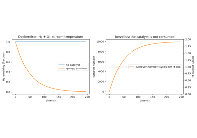
Doebereiner’s platinum and Berzelius’s catalysis: a catalyst that is not consumed
1875 – 1878 – Gibbs and the Thermodynamics of Adsorption#
In the second half of his memoir “On the Equilibrium of Heterogeneous Substances,” J. Willard Gibbs treated the boundary between two phases as a thermodynamic object in its own right. He described it by a surface excess \(\Gamma\): the amount of a component held at the interface beyond what the two bulk phases would contain if they ran unchanged right up to a mathematical dividing surface. For a dilute solute at a liquid surface, his analysis gives the Gibbs adsorption equation
This links something invisible, how much solute sits at the surface, to something easy to measure, how the surface tension \(\gamma\) changes as solute is added. A solute that lowers the surface tension, such as a soap or a fatty acid, must be concentrated at the surface. Thirty years later, Bohdan Szyszkowski’s empirical surface-tension equation for aqueous fatty acids, \(\gamma = \gamma_0 - RT\Gamma_{max}\ln(1+Kc)\), turned under Gibbs’s equation into exactly a saturating, Langmuir-shaped surface excess. This was one of the first quantitative signs of a monolayer at a liquid surface.
Implementation:
gibbs_surface_excess() applies the Gibbs
equation to measured surface-tension data by numerical differentiation
in \(\ln c\), and
szyszkowski_surface_tension() provides the
Szyszkowski equation. Together they recover
\(\Gamma = \Gamma_{max}Kc/(1+Kc)\), the same form as
langmuir_coverage().
References: J. W. Gibbs, “On the Equilibrium of Heterogeneous Substances,” Trans. Connecticut Acad. Arts Sci. 3 (1875-1876), 108-248, and (1877-1878), 343-524; B. von Szyszkowski, “Experimentelle Studien ueber kapillare Eigenschaften der waesserigen Loesungen von Fettsaeuren,” Z. Phys. Chem. 64 (1908); A. W. Adamson and A. P. Gast, Physical Chemistry of Surfaces, 6th ed. (New York: Wiley, 1997), Ch. III.
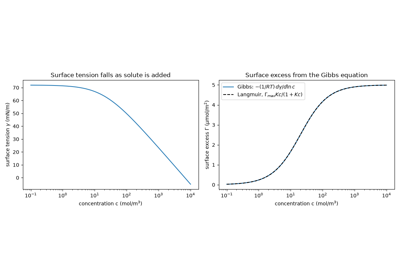
The Gibbs adsorption equation: surface excess from surface tension
1889 – Arrhenius, Ostwald, and the Kinetic Meaning of a Catalyst#
Svante Arrhenius’s 1889 equation gave the first quantitative account of why reaction rates rise so steeply with temperature, proposing that only molecules colliding with at least a threshold “activation energy” \(E_a\) can react, so that the rate constant follows
Around the same period, Wilhelm Ostwald crystallized the modern definition of a catalyst: a substance that changes a reaction’s rate without being itself consumed and, crucially, without changing the reaction’s thermodynamics – its equilibrium constant and the position of equilibrium are exactly what they would be without it. Ostwald was awarded the 1909 Nobel Prize in Chemistry “in recognition of his work on catalysis and for his investigations into the fundamental principles governing chemical equilibria and rates of reaction.” Put together, Arrhenius’s equation and Ostwald’s definition give the precise, working picture every quantitative theory of catalysis since has built on: a catalyst’s entire effect is to open a lower-\(E_a\) pathway to the same products, and the resulting rate enhancement is a pure exponential in how much that activation energy drops.
Implementation:
compare_catalyzed_rate()
implements exactly this picture, evaluating catalyzed and uncatalyzed
rate constants via
arrhenius_rate_constant()
(reused directly rather than reimplemented, per this package’s
convention of not duplicating shared kinetics machinery across domains)
and reporting their ratio as the rate enhancement – Ostwald’s
“unchanged thermodynamics” half of the definition is implicit in the
function never touching an equilibrium constant at all, only the two
rate constants.
References: S. Arrhenius, Z. Phys. Chem. 4 (1889), 226-248; W. Ostwald’s definition of catalysis was developed across his research on reaction kinetics and chemical dynamics through the 1880s-1890s (see, e.g., his Lehrbuch der allgemeinen Chemie, 2nd ed., Vol. 2, Leipzig: Engelmann, 1896) rather than in one single citable paper; “The Nobel Prize in Chemistry 1909,” NobelPrize.org.
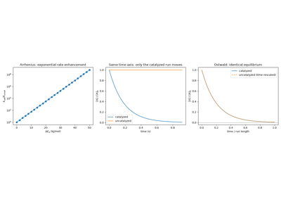
Arrhenius and Ostwald: a catalyst speeds a reaction but leaves its equilibrium alone
1897 – 1912 – Sabatier, Senderens, and Catalytic Hydrogenation#
Working together at Toulouse, Paul Sabatier and Jean-Baptiste Senderens showed, beginning with ethylene over nickel in 1897 and extending the method to a wide range of unsaturated organic compounds over the following years (culminating in the direct hydrogenation of carbon monoxide to methane in 1902), that finely divided nickel, cobalt, iron, and other metals catalyze the addition of hydrogen across carbon-carbon double and triple bonds at temperatures far below where the uncatalyzed gas-phase reaction proceeds at any useful rate. Catalytic hydrogenation became one of the most widely used reactions in organic and industrial chemistry – from Wilhelm Normann’s 1902 hydrogenation of vegetable oils into solid fats to the ammonia- and petroleum-processing industries built up over the following decades – and earned Sabatier a share of the 1912 Nobel Prize in Chemistry “for his method of hydrogenating organic compounds in the presence of finely disintegrated metals whereby the progress of organic chemistry has been greatly advanced in recent years.”
Beyond the specific reaction, Sabatier drew a general qualitative lesson from years of screening different metals for hydrogenation activity, set out in his 1913 monograph La Catalyse en Chimie Organique: a good catalyst must bind the reacting molecule strongly enough to activate it, but not so strongly that the resulting surface intermediate never lets go to free the site for another turnover. Sabatier stated this as a qualitative rule of thumb rather than a mathematical relationship; giving it quantitative, structural content took the multiplet theory and volcano-curve formalism described below.
Connection: chemistrykit.surface.systems.catalysis’s
compare_catalyzed_rate()
and turnover_frequency()
quantify a catalyst’s activity once a reaction pathway is chosen, but
say nothing about which metal or binding strength is optimal for a
given reaction – the qualitative selection principle Sabatier
articulated here, given quantitative form directly below.
References: P. Sabatier and J.-B. Senderens, “Nouvelles syntheses du methane,” C. R. Acad. Sci. 134 (1902), 514-516, and their earlier series of notes to the Academy beginning in 1897; P. Sabatier, La Catalyse en Chimie Organique (Paris: Librairie Polytechnique Ch. Beranger, 1913); “The Nobel Prize in Chemistry 1912,” NobelPrize.org.
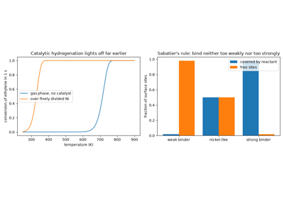
Sabatier and Senderens: catalytic hydrogenation over finely divided nickel
1906 – Freundlich’s Empirical Adsorption Isotherm#
Herbert Freundlich, studying how much solute a solid adsorbs from solution as a function of the solute’s equilibrium concentration (or, for gases, its partial pressure), found that a simple power law
fits an enormous range of experimental adsorption data far better than any theory then available could explain. Freundlich made no claim about the underlying mechanism; the isotherm bearing his name is deliberately empirical, and remains useful today precisely because it is a good approximate description of adsorption on a genuinely heterogeneous surface – one with a spread of different site binding energies, rather than the single uniform energy Langmuir would assume just over a decade later. Its price is that, having no saturation limit of its own, it should not be extrapolated to pressures far outside the range it was fitted to, where any real surface eventually saturates.
Implementation:
freundlich_loading() and
FreundlichIsotherm
implement exactly this power law;
fit_freundlich() recovers
\((K_f, n)\) from data via the standard logarithmic linearization,
\(\ln q = \ln K_f + (1/n)\ln P\), reusing the shared
chemistrykit.surface.utils.regression.linear_fit ordinary-least-
squares routine that every isotherm linearization in this package builds
on.
References: H. Freundlich, “Ueber die Adsorption in Loesungen,” Z. Phys. Chem. 57 (1906), 385-470.
1914 – 1947 – Polanyi’s Potential Theory and the Dubinin-Radushkevich Isotherm#
Michael Polanyi proposed in 1914 a picture of adsorption quite unlike Langmuir’s sites. The solid surrounds itself with a field of attraction, and gas within it is compressed into a dense, liquid-like adsorbed layer. He measured the strength of that field at any point by the adsorption potential
the work needed to compress vapor from its equilibrium pressure \(P\) to its saturation pressure \(P_0\). His central claim was that the volume \(W\) of adsorbed liquid depends on \(A\) alone, through a characteristic curve \(W(A)\) that is the same at every temperature. Isotherms measured at different temperatures should therefore collapse onto one curve when replotted against \(A\). The theory was eclipsed for decades by Langmuir’s, but Mikhail Dubinin revived it for the microporous activated carbons used in gas masks and gas separation. In 1947 he and Leonid Radushkevich gave the characteristic curve an explicit form for pore filling,
with \(W_0\) the micropore volume and \(E\) a characteristic energy. It is still a standard tool for characterizing microporous adsorbents.
Implementation: polanyi_potential()
computes \(A\);
dubinin_radushkevich_loading() and
DubininRadushkevichIsotherm implement the
Dubinin-Radushkevich isotherm; and
fit_dubinin_radushkevich() recovers
\((W_0, E)\) from the linearization
\(\ln W = \ln W_0 - A^2/E^2\), using the same shared least-squares
routine as the other isotherm fits.
References: M. Polanyi, “Adsorption von Gasen (Daempfen) durch ein festes nichtfluechtiges Adsorbens,” Verh. Dtsch. Phys. Ges. 16 (1914), 1012-1016; M. M. Dubinin and L. V. Radushkevich, “Equation of the Characteristic Curve of Activated Charcoal,” Proc. Acad. Sci. USSR, Phys. Chem. Sect. 55 (1947), 331-333; S. J. Gregg and K. S. W. Sing, Adsorption, Surface Area and Porosity, 2nd ed. (London: Academic Press, 1982), Ch. 4.
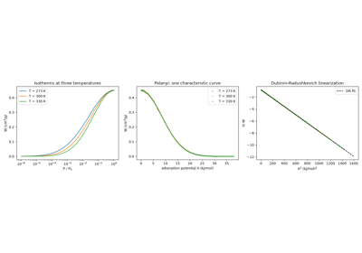
Polanyi’s potential theory and the Dubinin-Radushkevich characteristic curve
1916 – 1918 – Langmuir’s Kinetic Theory of the Monolayer#
Irving Langmuir, working at the General Electric Research Laboratory on the behavior of gases inside incandescent light bulbs, proposed a genuinely mechanistic alternative to Freundlich’s empirical curve: a fixed population of identical, independent surface sites, each capable of holding at most one adsorbate molecule, in dynamic equilibrium between adsorption (rate proportional to the pressure and the fraction of empty sites) and desorption (rate proportional to the fraction of occupied sites). Setting these two rates equal gives the fractional coverage
which – unlike Freundlich’s isotherm – saturates at exactly \(\theta = 1\) as \(P \to \infty\), a true monolayer limit following directly from the model’s own assumptions rather than fitted after the fact. Langmuir laid out the monolayer concept in a 1916 paper and gave the full kinetic derivation and its systematic experimental verification (on mica, glass, and platinum) in 1918; the resulting body of work on adsorbed films and surface chemistry more broadly earned him the 1932 Nobel Prize in Chemistry, “for his discoveries and investigations in surface chemistry” – and, unusually for an industrial research chemist of his era, made him the first American industrial scientist to receive a Nobel Prize in the sciences.
Implementation:
langmuir_coverage()
implements exactly this coverage law, and
LangmuirIsotherm wraps it
with a monolayer capacity qmax to give the loading
\(q(P)=q_{max}\theta(P)\); its
half_saturation_pressure()
returns the pressure \(P=1/K\) at which coverage is exactly one-half
– the defining, exactly solvable feature Langmuir’s model has and
Freundlich’s does not.
fit_langmuir() recovers
\((K, q_{max})\) from data via the standard \(1/q\)-vs-\(1/P\)
linearization.
References: I. Langmuir, “The Constitution and Fundamental Properties of Solids and Liquids. Part I. Solids,” J. Am. Chem. Soc. 38 (1916), 2221-2295; I. Langmuir, “The Adsorption of Gases on Plane Surfaces of Glass, Mica and Platinum,” J. Am. Chem. Soc. 40 (1918), 1361-1403; “The Nobel Prize in Chemistry 1932,” NobelPrize.org.
1920s – Hinshelwood and the Langmuir-Hinshelwood Mechanism#
Langmuir’s own 1922 kinetic study of platinum-catalyzed carbon monoxide and hydrogen oxidation showed that a surface reaction’s rate should depend not on the reactant’s pressure directly, but on its Langmuir coverage – first order in pressure while the surface is nearly bare, but leveling off to zero order once the surface saturates, a qualitative signature no simple gas-phase elementary reaction shows. Cyril Hinshelwood, through an extensive program of gas-phase reaction-kinetics measurements at Oxford across the 1920s (collected in his standard reference work The Kinetics of Chemical Change in Gaseous Systems, first published in 1926), independently developed and thoroughly tested the same coverage-dependent picture, including its extension to two reactants competing for the same pool of sites – the mechanism that now carries both their names. Hinshelwood’s broader body of work on the kinetics of gas-phase and surface reactions was recognized, together with Nikolay Semenov’s parallel work on chain reactions, with the 1956 Nobel Prize in Chemistry, awarded jointly “for their researches into the mechanism of chemical reactions.”
The dual-site (competitive) case has a characteristic and counterintuitive feature that the single-site case lacks: for fixed pressure of one reactant, the rate is not monotonic in the other’s pressure, since each reactant’s rise in coverage necessarily crowds the other off a shared pool of sites – exactly the mechanism behind the sharp poisoning of a catalyst’s activity by an excess of one reagent, or a strongly binding contaminant.
Implementation:
lh_rate_single_site()
implements the single-reactant rate law
\(\text{rate}=k\theta_A=kK_AP_A/(1+K_AP_A)\), built directly on
langmuir_coverage() rather
than re-deriving the coverage expression, per this module’s own stated
convention; it visibly interpolates between first order (low pressure)
and zero order (saturated surface) in \(P_A\).
lh_rate_dual_site()
implements the competitive two-reactant case,
\(\text{rate}=k\theta_A\theta_B\) with each \(\theta\) reduced by
the other species’ occupancy of the shared site pool, and reproduces
the characteristic non-monotonic rate-vs-pressure behavior directly.
References: I. Langmuir, “The Mechanism of the Catalytic Action of Platinum in the Reactions \(2CO+O_2=2CO_2\) and \(2H_2+O_2=2H_2O\),” Trans. Faraday Soc. 17 (1922), 621-654; C. N. Hinshelwood, The Kinetics of Chemical Change in Gaseous Systems (Oxford: Clarendon Press, 1926; subsequent editions through the 1940s incorporated the accumulating surface-kinetics work); “The Nobel Prize in Chemistry 1956,” NobelPrize.org.
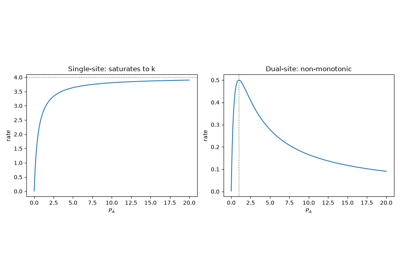
Langmuir-Hinshelwood surface-reaction kinetics
1925 – Constable and the Compensation Effect#
Studying a series of related catalytic decompositions over different but chemically similar surfaces, Frank Constable found a strikingly regular pattern: across the series, a catalyst with a higher apparent activation energy \(E_a\) also had a systematically higher pre-exponential (frequency) factor A in the Arrhenius equation, the two varying together in a way that partly cancels out in the rate constant itself – a “compensation” between the two Arrhenius parameters that recurs across an enormous range of catalytic and non-catalytic series and remains, a century later, only partly understood (real physical compensation from entropy-enthalpy tradeoffs in the transition state, in some cases; a statistical artifact of how \(E_a\) and A are extracted from a limited experimental temperature range, in others). Constable’s own explanation, that surface-site heterogeneity within a catalyst couples the two parameters, was an early attempt to connect the mechanistic detail of a real, non-uniform catalytic surface to a directly measurable kinetic regularity.
Connection:
compare_catalyzed_rate()
takes the two Arrhenius parameters for the catalyzed and uncatalyzed
pathways as independent inputs – A_catalyzed defaults to
A_uncatalyzed only as a simplifying assumption the function’s own
docstring flags explicitly, not a physical necessity – so a
Constable-style compensating change in both \(E_a\) and A across a
catalyst series is directly expressible by supplying different values of
each, though this package does not implement a dedicated
compensation-effect fitting routine of its own.
References: F. H. Constable, “The Mechanism of Catalytic Decomposition,” Proc. R. Soc. A 108 (1925), 355-378 (exact page range as commonly cited in secondary literature; not independently re-verified against the original volume).
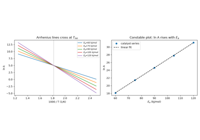
Constable’s compensation effect across a catalyst series
1929 – 2004 – Balandin, Sabatier’s Principle, and the Volcano Curve#
Alexey Balandin’s multiplet theory, published beginning in 1929, was the first attempt to give Sabatier’s qualitative binding-strength principle a structural, quantitative footing: modeling a catalytic reaction as requiring a specific geometric arrangement (“multiplet”) of active surface atoms matched to the reacting molecule’s own geometry, Balandin argued that catalytic activity plotted against a measure of binding strength across a series of different catalysts should rise, peak, and fall again – a “volcano curve” with the most active catalysts sitting partway up either side, never at either extreme. Balandin’s own geometric multiplet mechanism did not survive as a literal picture of how catalysis works, but the volcano-curve shape it predicted did, and turned up repeatedly and robustly in later experimental catalytic-activity data across many different reaction families.
The modern, quantitative version of this idea combines two later pieces of theory: the Bronsted-Evans-Polanyi relation, an empirical linear correlation between a reaction step’s activation energy and its thermodynamic driving force within a family of related reactions, and density-functional-theory calculations of adsorption energies on real catalyst surfaces. Bligaard, Norskov, and coworkers showed in 2004 how combining the two reproduces the volcano curve as a direct mathematical consequence, rather than a qualitative rule of thumb – putting Sabatier’s century-old principle, at last, on the same quantitative footing as any other testable theory of reaction rates, and turning volcano-curve reasoning into a standard, practical catalyst-design tool in modern computational chemistry, rather than merely a retrospective explanation of why some catalysts already found by trial and error happen to work well.
Implementation: this package has no dedicated multiplet-theory or
Broensted-Evans-Polanyi module – both require geometric and
electronic-structure detail well beyond
chemistrykit.surface’s scope – but the qualitative volcano
shape itself is reproduced directly from
langmuir_coverage(): modeling
a two-step surface mechanism whose rate needs both an occupied site (to
hold the reacting intermediate) and an empty site (for the next step)
gives a toy rate \(\propto\theta(1-\theta)\), maximized exactly at
Langmuir’s own half-saturation point \(\theta=1/2\)
(\(K=1/P\)) – too little binding starves the surface of the
intermediate, too much starves it of empty sites, and only an
intermediate binding strength maximizes the rate, exactly as Sabatier’s
and Balandin’s qualitative principle requires.
References: A. A. Balandin, “Zur Multiplett-Theorie der Katalyse,” Z. Phys. Chem. B2 (1929), 289-316 (exact page range as commonly cited in secondary literature; not independently re-verified against the original volume); T. Bligaard, J. K. Norskov, S. Dahl, J. Matthiesen, C. H. Christensen, and J. Sehested, “The Broensted-Evans-Polanyi Relation and the Volcano Curve in Heterogeneous Catalysis,” J. Catal. 224 (2004), 206-217.
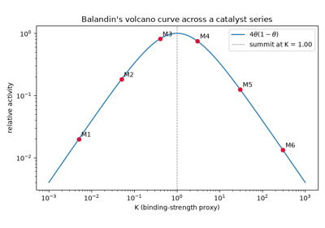
Balandin’s volcano curve: catalytic activity peaks at intermediate binding
1937 – 1938 – Brunauer, Emmett, and Teller: The BET Isotherm#
Stephen Brunauer and Paul Emmett, working on the surface properties of the iron catalysts used in ammonia synthesis, showed in 1937 that measuring a full low-temperature adsorption isotherm of an inert gas (rather than relying on the single-point estimates then in common use) gave a far more reliable determination of a catalyst’s true surface area. Generalizing that method into a complete theory the following year with Edward Teller, they extended Langmuir’s single-layer picture to allow genuine multilayer adsorption: once a site is occupied, a second adsorbate molecule can condense on top of the first with liquefaction-like energetics, a third on top of that, and so on up to the adsorbate’s saturation vapor pressure \(P_0\), at which point the adsorbed amount formally diverges into bulk condensation:
The resulting BET method for computing a solid’s specific surface area from a measured isotherm became, almost immediately, the standard technique across catalysis and materials science, and remains so today – most modern commercial surface-area analyzers still report a “BET surface area” as their headline number.
Emmett’s own career took an unrelated wartime turn five years later: during World War II he worked on the Manhattan Project under Harold Urey at Columbia University, developing barrier materials for the gaseous-diffusion separation of uranium-235 from uranium-238, before returning to civilian catalysis research at the Mellon Institute in late 1944.
Implementation: bet_loading()
and BETIsotherm implement
exactly this multilayer isotherm;
fit_bet() recovers
\((V_m, C)\) from data via the standard linearization,
\(x/[V(1-x)] = 1/(V_mC) + [(C-1)/(V_mC)]x\). As the module docstring
for chemistrykit.surface.systems.bet notes and
chemistrykit.surface.tests.test_bet verifies numerically, BET
reduces exactly to langmuir_coverage()
in the limit \(P_0\to\infty\) at fixed \(K=C/P_0\) – the limit in
which the vapor never approaches saturation, so multilayer condensation
never has a chance to set in and only the monolayer term survives,
directly connecting BET back to the 1918 entry above.
References: S. Brunauer and P. H. Emmett, “The Use of Low Temperature van der Waals Adsorption Isotherms in Determining the Surface Areas of Iron Synthetic Ammonia Catalysts,” J. Am. Chem. Soc. 59 (1937), 2682-2689 (exact page range as commonly cited in secondary literature; not independently re-verified); S. Brunauer, P. H. Emmett, and E. Teller, “Adsorption of Gases in Multimolecular Layers,” J. Am. Chem. Soc. 60 (1938), 309-319; W. S. Koski, “Paul Hugh Emmett,” Biographical Memoirs (National Academy of Sciences) 67 (1995) (Manhattan Project service).
1940 – Temkin, Pyzhev, and the Temkin Isotherm#
Working on the kinetics of ammonia synthesis over promoted iron catalysts, the process at the heart of the Haber-Bosch industry, Mikhail Temkin and V. Pyzhev needed an isotherm for nitrogen on a surface that was plainly not uniform. They assumed that the heat of adsorption falls linearly as the surface fills, rather than staying constant as Langmuir had assumed. This is the same as a surface carrying a uniform spread of site energies. Averaging Langmuir’s coverage over such a spread gives an isotherm that is logarithmic in pressure over a wide middle range of coverage,
where \(fRT\) is the width of the energy spread. The same assumption gave them the Temkin-Pyzhev rate law for ammonia synthesis, which for decades was the standard kinetic model for designing ammonia converters.
Implementation:
uniform_energy_coverage() gives the exact
Langmuir coverage averaged over a uniform spread of site energies, which
reduces to the Temkin logarithm at intermediate coverage;
temkin_loading() and
TemkinIsotherm implement the loading form
\(q = (RT/b_T)\ln(A_TP)\); and
fit_temkin() recovers \((A_T, b_T)\) from
the straight line of \(q\) against \(\ln P\).
References: M. I. Temkin and V. Pyzhev, “Kinetics of Ammonia Synthesis on Promoted Iron Catalysts,” Acta Physicochim. URSS 12 (1940), 327-356; P. W. Atkins and J. de Paula, Physical Chemistry, 11th ed. (Oxford University Press, 2018).
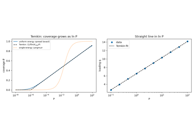
The Temkin isotherm: a heat of adsorption that falls with coverage
1940 – Eley, Rideal, and the Eley-Rideal Mechanism#
Studying the conversion of para-hydrogen to ortho-hydrogen on tungsten, Daniel Eley and Eric Rideal proposed a surface mechanism different from Langmuir and Hinshelwood’s. In their scheme only one reactant is adsorbed, and the other reacts with it by striking it directly from the gas phase, without first adsorbing. The rate is then
Because the two reactants never compete for the same sites, this rate rises steadily with the pressure of the adsorbed reactant and levels off, and it stays first order in the gas-phase reactant at every pressure. The competitive Langmuir-Hinshelwood rate instead passes through a maximum. Comparing measured rate laws against these two shapes became the standard first test of a surface mechanism. Later molecular-beam experiments showed that genuine Eley-Rideal reactions are fairly rare, with most surface reactions following the Langmuir-Hinshelwood route.
Implementation: er_rate() implements
\(k\theta_AP_B\), built on
langmuir_coverage() just as
lh_rate_dual_site() is, so the two mechanisms
can be compared directly.
References: D. D. Eley and E. K. Rideal, “Parahydrogen Conversion on Tungsten,” Nature 146 (1940), 401-402; P. W. Atkins and J. de Paula, Physical Chemistry, 11th ed. (Oxford University Press, 2018).
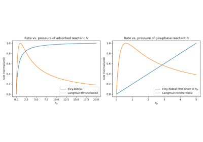
The Eley-Rideal mechanism: a gas molecule strikes an adsorbed one
1962 – Redhead and Temperature-Programmed Desorption#
As ultrahigh-vacuum techniques matured, Paul Redhead at the National Research Council of Canada developed flash or temperature-programmed desorption into a quantitative method. A surface covered with adsorbate is heated at a steady rate \(\beta\), and the gas it releases is recorded; each distinct binding state shows up as a peak. The desorption rate follows the Polanyi-Wigner equation, \(-d\theta/dT = (\nu/\beta)\,\theta^n e^{-E_d/RT}\). For first-order desorption Redhead showed that the peak temperature \(T_p\) alone fixes the desorption energy, to a good approximation
He also showed how the peak shape and its shift with coverage reveal the desorption order: first-order peaks stay put as the initial coverage changes, while second-order peaks move to lower temperature as coverage rises. TPD became one of the most widely used tools of surface science for measuring how strongly molecules bind to surfaces.
Implementation: simulate_tpd() integrates
the Polanyi-Wigner equation for first- and second-order desorption and
returns a TPDResult;
first_order_peak_temperature() solves the
exact first-order peak condition
\(E_d/(RT_p^2) = (\nu/\beta)e^{-E_d/RT_p}\); and
redhead_desorption_energy() implements
Redhead’s formula.
References: P. A. Redhead, “Thermal Desorption of Gases,” Vacuum 12 (1962), 203-211; R. I. Masel, Principles of Adsorption and Reaction on Solid Surfaces (New York: Wiley, 1996), Ch. 7.
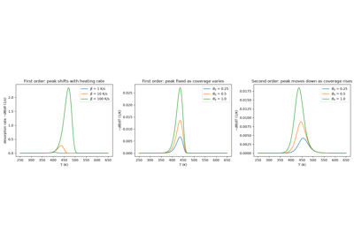
Redhead’s analysis of temperature-programmed desorption
1968 – 1995 – Boudart and Turnover Rates in Heterogeneous Catalysis#
Borrowing a concept from enzymology – where an enzyme’s “turnover number” had long measured how many substrate molecules a single active site converts per unit time – Michel Boudart argued in his influential 1968 text Kinetics of Chemical Processes that heterogeneous catalysis needed the same intrinsic, per-site measure of activity, rather than a rate normalized only to the total mass or volume of catalyst used, which conflates genuine catalytic activity with how much active surface a particular sample happens to expose. Boudart’s turnover frequency – rate of product formation per active site per unit time – let chemically and structurally very different catalysts be compared on a level footing, and remains the standard intrinsic-activity metric in catalysis research; his later retrospective in Chemical Reviews traced the concept’s adoption and the persistent practical difficulty of actually counting active sites accurately enough to compute it with confidence.
Implementation:
turnover_frequency()
implements exactly this per-site rate,
\(\text{TOF}=\text{rate}/[\text{active sites}]\), while
turnover_number() implements
the complementary, dimensionless durability measure – total catalytic
cycles performed per site over the lifetime of a reaction, rather than
an instantaneous rate – returned together with the underlying
Arrhenius-based rate comparison in
CatalyticRateComparison.
References: M. Boudart, Kinetics of Chemical Processes (Englewood Cliffs, NJ: Prentice-Hall, 1968); M. Boudart, “Turnover Rates in Heterogeneous Catalysis,” Chem. Rev. 95 (1995), 661-666.
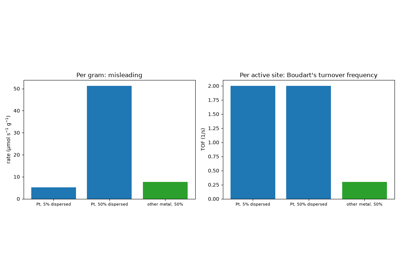
Boudart’s turnover frequency: comparing catalysts per active site